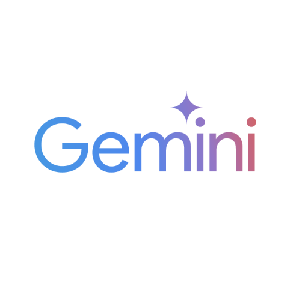

Master repo · global hub · archive layer
Tessy Argenta Fenix
O repositório mestre do ecossistema Rabelus. Aqui a Tessy continua independente,
os ativos do repo-manus-hackathon ficam arquivados localmente e a landing
page apresenta tudo como um único sistema.
O momento
Um hub não pode parecer uma nota de rodapé
O objetivo é mostrar o sistema inteiro com força editorial, não reduzir o contexto a um resumo frio.
“
O master repo precisa carregar o peso da história, da estética e da operação.
Ele reúne o arquivo do hackathon, o runtime Inception, o bootstrap do TUI e a regra formal de sincronização dupla.
Local-first
O computador do usuário continua no centro.
Filesystem, shell, Git e contexto local aparecem como poderes reais, não como abstração escondida.
Mission-first
Inception organiza agentes por missão.
Providers, canais, ferramentas, memória e protocolos entram como arquitetura, não como improviso.
Curadoria
O master repo não substitui os módulos.
Ele apresenta o ecossistema inteiro e mantém Tessy, Inception v2 e inception-tui em suas linhas de vida próprias.
Repository atlas
Um hub sem sobrepor os módulos originais
O master repo orienta, documenta e apresenta, mas não substitui os repositórios individuais.

Tessy
Ambiente local-first com IA, terminal, GitHub nativo e vault criptográfico.

Inception v2
Runtime da plataforma e camada de evolução do ecossistema.
inception-tui
Ferramenta de bootstrap e orquestração para o fluxo GSD.

repo-manus-hackathon
Arquivo visual e textual que alimenta a nova landing page do hub.
Asset archive
Ativos reaproveitados no próprio repositório
Todos os arquivos do repositório-base foram trazidos para um arquivo local, evitando dependência externa para a apresentação.


Tessy narrative
Da frustração ao controle.
A sequência Argenta mostra a travessia do problema até a revelação. A estética não é decorativa: ela sustenta a história do controle local-first.


System arc
Potência e conversa no mesmo plano.
O trabalho precisa parecer um ambiente vivo, não uma vitrine de imagens. Cada shot aqui ancora uma etapa do ecossistema em ação.


Didata archive
Identidade, arquitetura e voz.
O outro polo do arquivo visual entra como contraste: memória complementar, escala e textura para a landing page do hub.
Motion archive
Video assets preservados no mesmo espaço
Os vídeos ficam aqui como memória visual e material de demonstração.
Tessy teaser
Arquivo histórico preservado sem apagar o aprendizado visual.
Didata teaser
O outro eixo do ecossistema, mantido como referência complementar.
Chronicle
Do código à curadoria
O hub nasce para organizar, apresentar e manter o ecossistema legível.
-
01
Repos independentes
Tessy, Inception v2 e inception-tui continuam cada um com sua própria linha de vida.
-
02
Arquivo visual
Os ativos do `repo-manus-hackathon` entram como camada de identidade e demonstração.
-
03
Landing master
O repositório global passa a apresentar tudo em um único ponto de entrada.